Eventos
HackaTec (Mayo)
El evento cumbre de innovación y desarrollo tecnológico donde los estudiantes de Ingeniería en Sistemas ponen a prueba sus habilidades resolviendo retos reales del entorno social y productivo en competencias contra reloj.
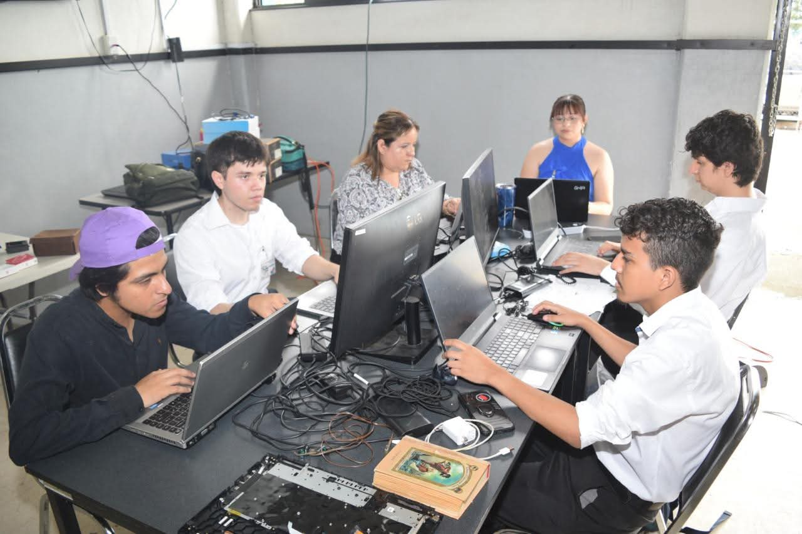
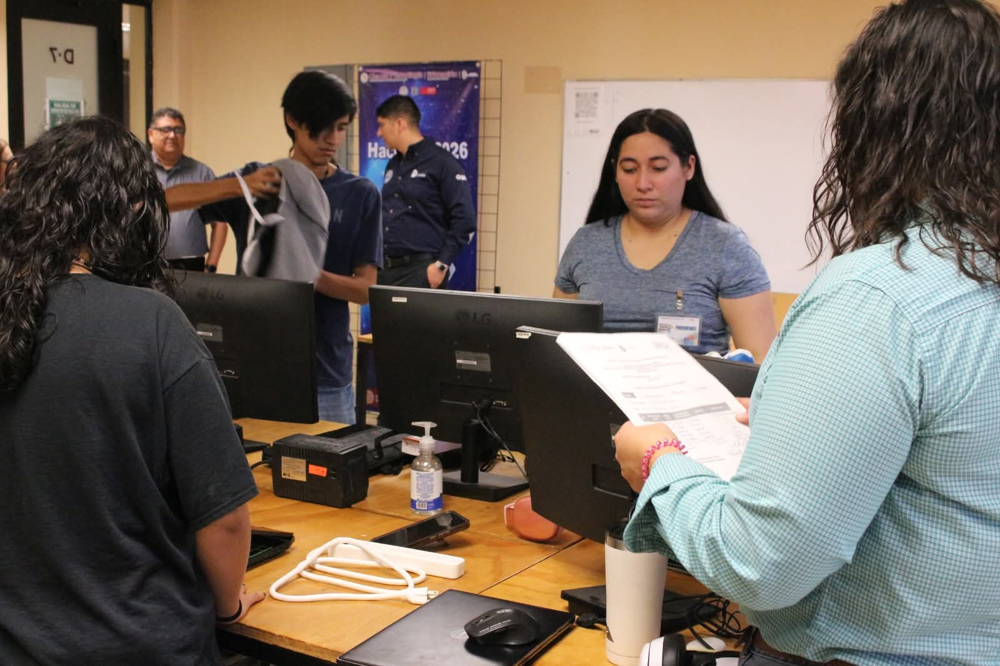


Día del Programador (Septiembre)
Se celebra a nivel mundial en el día 256 del año (un guiño a las combinaciones que se pueden representar con 8 bits). El campus lo conmemora con conferencias, talleres y torneos de código.
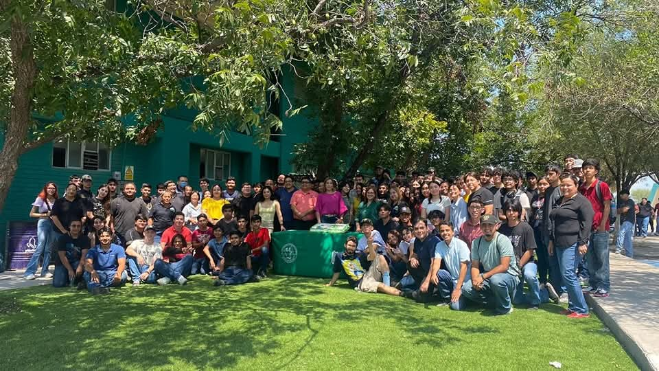
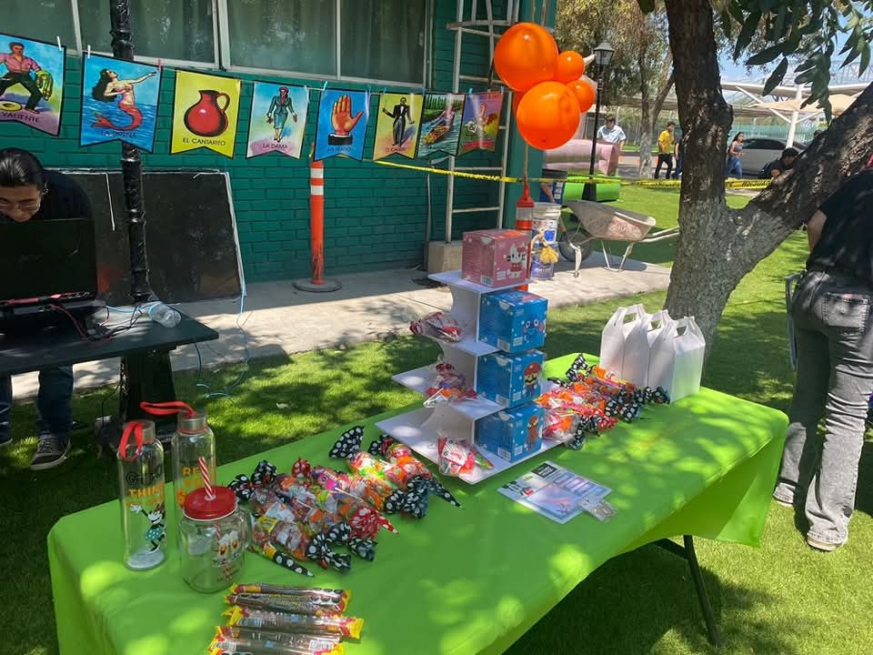
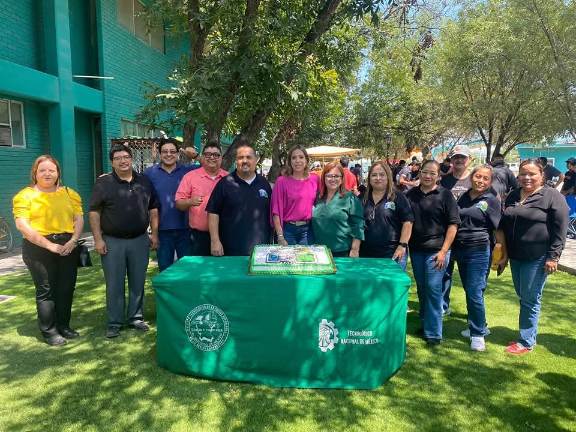
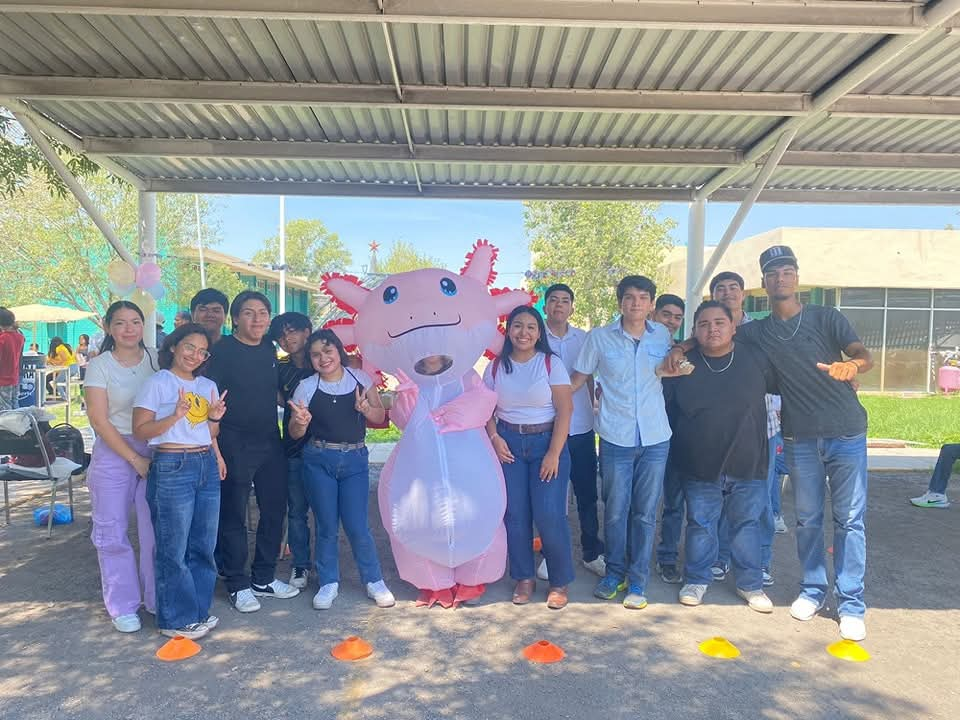
Aniversario del Instituto (Octubre)
Semana conmemorativa que une a toda la comunidad tecnológica. Para la carrera de Sistemas, es el marco ideal para recibir a egresados destacados y conferencistas magistrales de la industria del software.
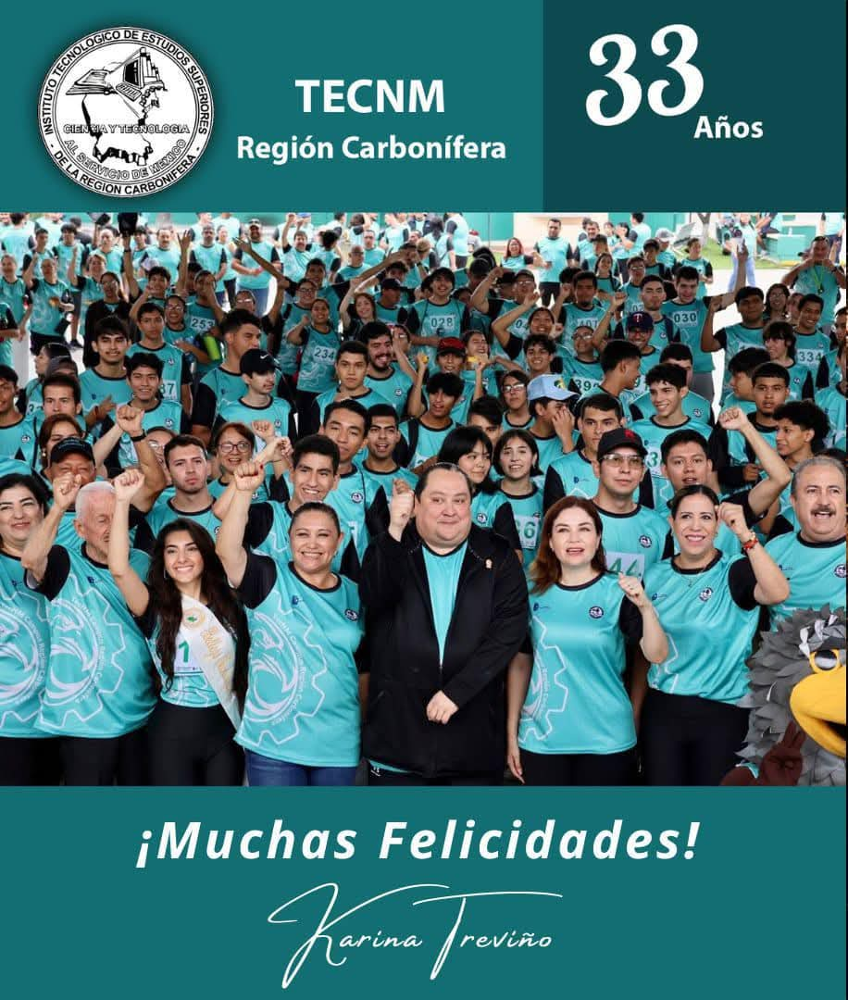
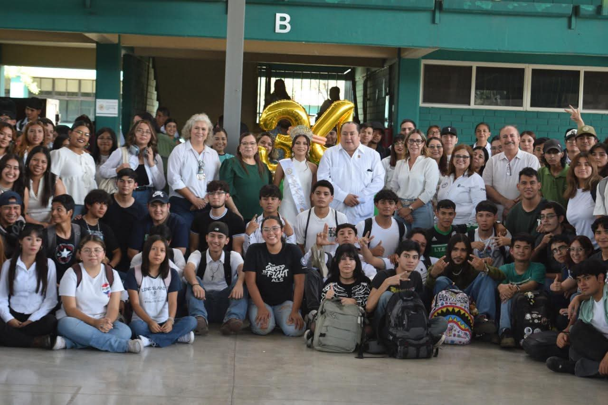
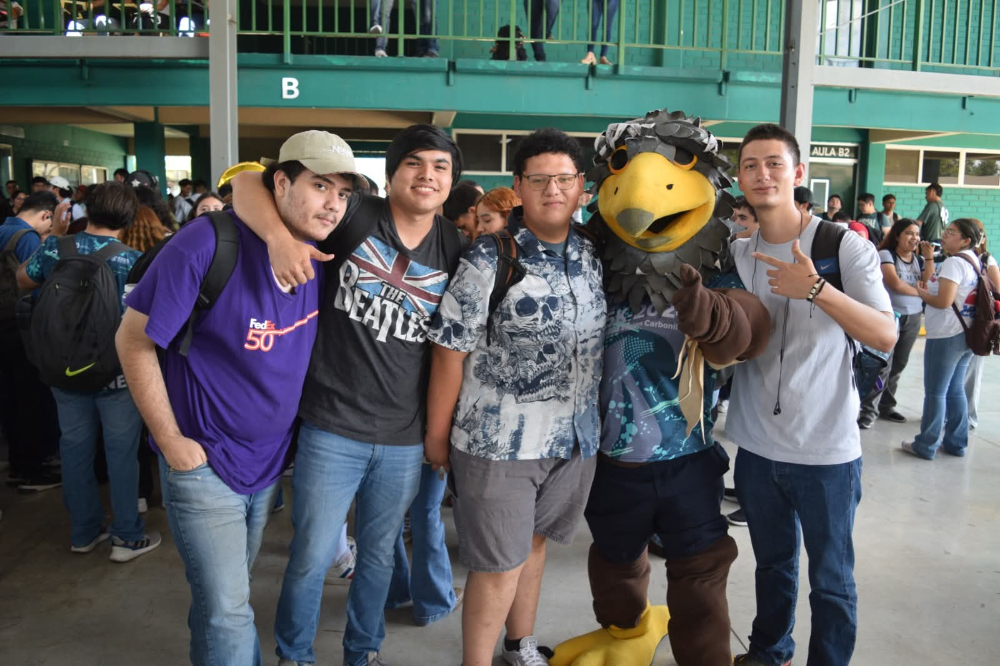
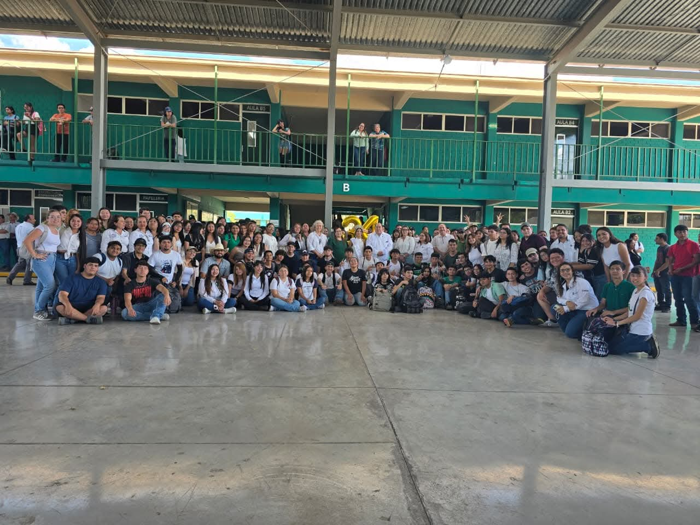
Semana Nacional de Ciencia y Tecnología (Noviembre)
Jornada intensiva dedicada a la divulgación tecnológica. Los alumnos de Sistemas presentan sus proyectos finales, prototipos de IoT, aplicaciones móviles y desarrollos web ante la comunidad académica.
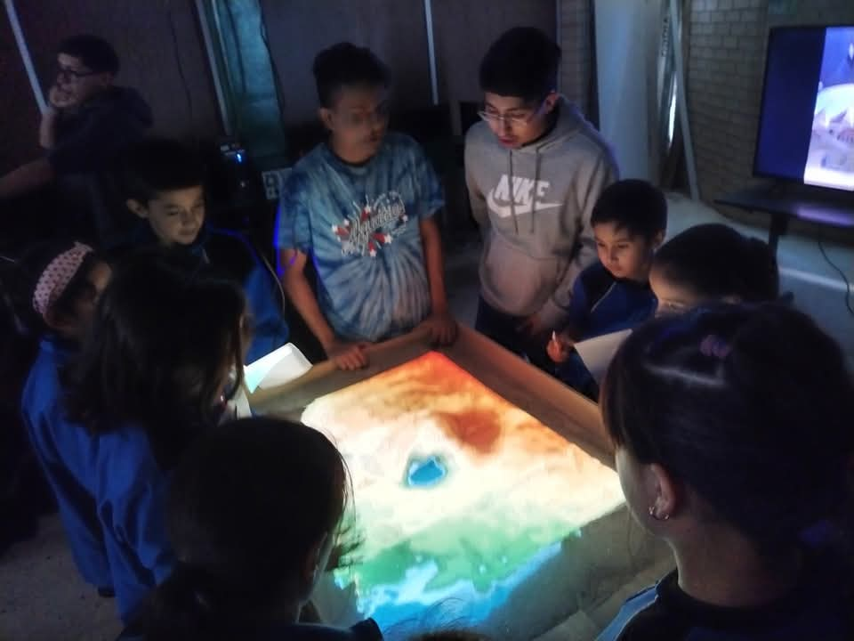
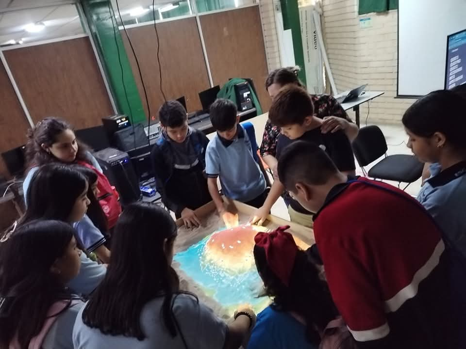
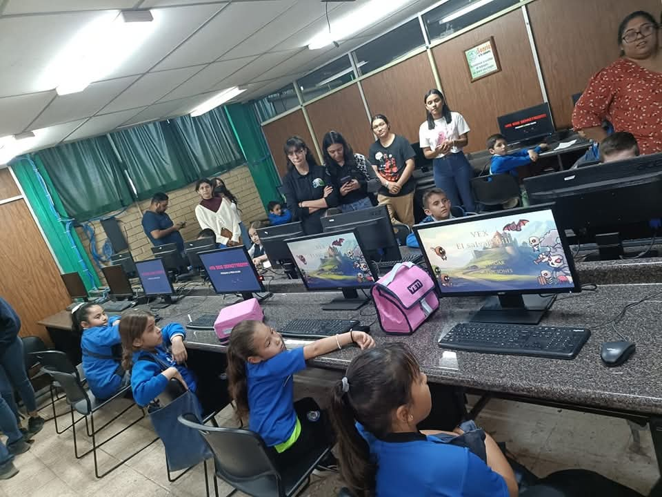
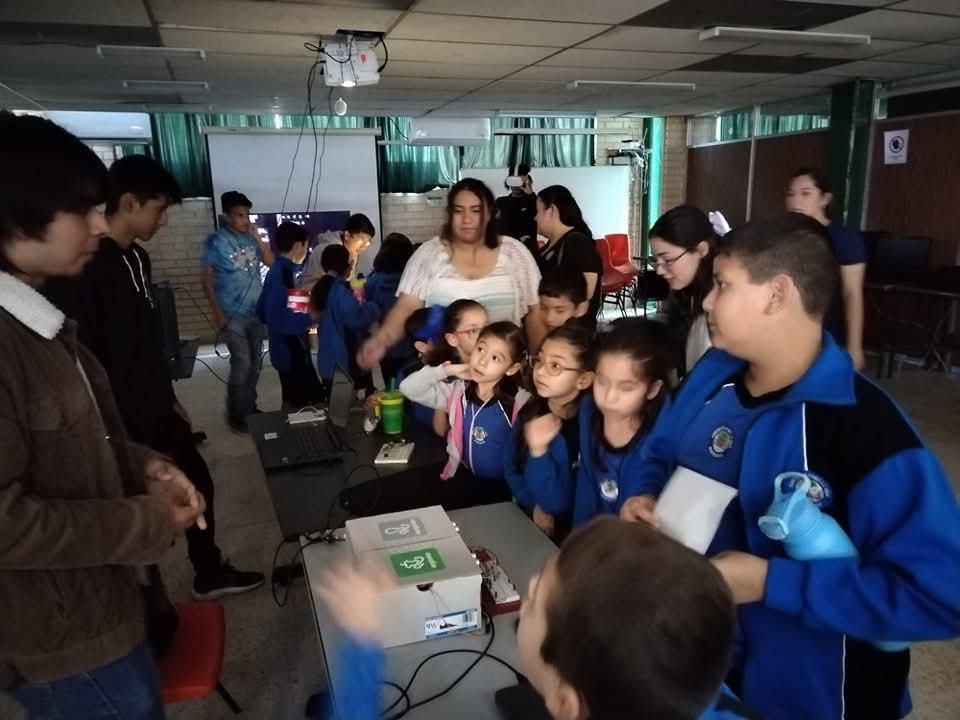